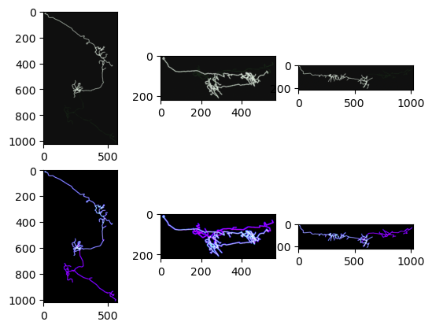
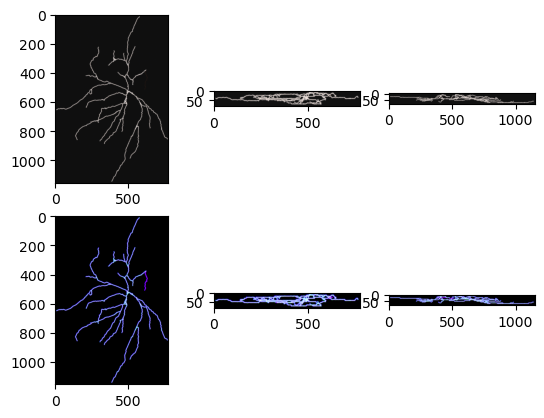

Tracking Inference
[1]:
%load_ext autoreload
%autoreload 2
%matplotlib inline
[2]:
import json
import sys
import torch
sys.path.append("../")
from environments.sac_tracking_env import Environment
from models import ResNet3D, ResidualBlock3D, ConvNet
from solvers import sac
DEVICE = "cuda:0" if torch.cuda.is_available() else "cpu"
dtype = torch.float32
Instantiate environment
[6]:
config_file = "../configs/sac_inference_neuromorpho.json"
with open(config_file) as f:
params = json.load(f)
img_path = params["img_path"]
outdir = params["outdir"]
name = params["name"]
step_size = params["step_size"] if "step_size" in params else 1.0
step_width = params["step_width"] if "step_width" in params else 1.0
alpha = params["alpha"] if "alpha" in params else 1.0
beta = params["beta"] if "beta" in params else 1e-3
friction = params["friction"] if "friction" in params else 1e-4
patch_radius = 17
if "classifier_weights" in params:
classifier_path = params["classifier_weights"]
classifier_state_dict = torch.load(classifier_path)#, weights_only=True)
classifier = ResNet3D(ResidualBlock3D, [3, 4, 6, 3], num_classes=1)
classifier = classifier.to(device=DEVICE, dtype=dtype)
classifier.load_state_dict(classifier_state_dict)
classifier.eval()
else:
classifier = None
env = Environment(img_path,
radius=patch_radius,
step_size=step_size,
step_width=step_width,
max_len=10000,
alpha=alpha,
beta=beta,
friction=friction,
classifier=classifier)
Instantiate actor network
[7]:
in_channels = 4
actor = ConvNet(chin=in_channels, chout=4)
actor = actor.to(device=DEVICE,dtype=dtype)
if "sac_weights" in params:
sac_weights_path = params["sac_weights"]
sac_state_dicts = torch.load(sac_weights_path)#, weights_only=True)
Perform tracking
[9]:
sac.inference(env, actor, outdir)

num branches: 5
3%|▎ | 2/73 [00:57<33:54, 28.66s/it]
---------------------------------------------------------------------------
KeyboardInterrupt Traceback (most recent call last)
Cell In[9], line 1
----> 1 sac.inference(env, actor, outdir)
File ~/neurotrack/notebooks/../solvers/sac.py:527, in inference(env, actor, outdir, n_trials, show)
521 # Option 1: Using numpy's compressed format
522 np.savez_compressed(os.path.join(outdir, f"{name}_{date}_inference.npz"),
523 labeled_neuron=labeled_neuron_np,
524 paths=np.array(paths_to_save, dtype=object),
525 coverage=np.float32(coverage))
--> 527 env.reset()
529 return
File ~/neurotrack/notebooks/../environments/sac_tracking_env.py:469, in Environment.reset(self, move_to_next)
466 self.img_idx += 1
467 self.img_idx = self.img_idx % len(self.img_files)
--> 469 self.__load_data(self.img_files[self.img_idx])
471 # TODO: remove in next version
472 # # load the next image
473 # neuron_data = torch.load(self.img_files[self.img_idx], weights_only=False)
(...)
481 # self.seeds = neuron_data["seeds"]
482 # self.graph = neuron_data["graph"]
484 seed = torch.tensor(self.seeds[self.seed_idx]) # type: ignore
File ~/neurotrack/notebooks/../environments/sac_tracking_env.py:217, in Environment.__load_data(self, path)
215 def __load_data(self, path):
216 img_file = glob(os.path.join(path, "*image.tif"))[0]
--> 217 img = tf.imread(img_file)
218 self.img = Image(torch.from_numpy(img))
219 density_file = glob(os.path.join(path, "*density.tif"))[0]
File ~/anaconda3/envs/tractography/lib/python3.12/site-packages/tifffile/tifffile.py:1273, in imread(***failed resolving arguments***)
1271 return store
1272 return zarr_selection(store, selection, out=out)
-> 1273 return tif.asarray(
1274 key=key,
1275 series=series,
1276 level=level,
1277 squeeze=squeeze,
1278 maxworkers=maxworkers,
1279 buffersize=buffersize,
1280 out=out,
1281 )
1283 elif isinstance(files, (FileHandle, IO)):
1284 raise ValueError('BinaryIO not supported')
File ~/anaconda3/envs/tractography/lib/python3.12/site-packages/tifffile/tifffile.py:4536, in TiffFile.asarray(self, key, series, level, squeeze, out, maxworkers, buffersize)
4532 result = page0.asarray(
4533 out=out, maxworkers=maxworkers, buffersize=buffersize
4534 )
4535 else:
-> 4536 result = stack_pages(
4537 pages, out=out, maxworkers=maxworkers, buffersize=buffersize
4538 )
4540 if result is None:
4541 return None
File ~/anaconda3/envs/tractography/lib/python3.12/site-packages/tifffile/tifffile.py:23276, in stack_pages(pages, tiled, lock, maxworkers, out, **kwargs)
23274 page0.decode # init TiffPage.decode function
23275 with ThreadPoolExecutor(maxworkers) as executor:
> 23276 for _ in executor.map(func, pages, range(npages)):
23277 pass
23279 else:
23280 # TODO: not used or tested
File ~/anaconda3/envs/tractography/lib/python3.12/concurrent/futures/_base.py:619, in Executor.map.<locals>.result_iterator()
616 while fs:
617 # Careful not to keep a reference to the popped future
618 if timeout is None:
--> 619 yield _result_or_cancel(fs.pop())
620 else:
621 yield _result_or_cancel(fs.pop(), end_time - time.monotonic())
File ~/anaconda3/envs/tractography/lib/python3.12/concurrent/futures/_base.py:317, in _result_or_cancel(***failed resolving arguments***)
315 try:
316 try:
--> 317 return fut.result(timeout)
318 finally:
319 fut.cancel()
File ~/anaconda3/envs/tractography/lib/python3.12/concurrent/futures/_base.py:451, in Future.result(self, timeout)
448 elif self._state == FINISHED:
449 return self.__get_result()
--> 451 self._condition.wait(timeout)
453 if self._state in [CANCELLED, CANCELLED_AND_NOTIFIED]:
454 raise CancelledError()
File ~/anaconda3/envs/tractography/lib/python3.12/threading.py:355, in Condition.wait(self, timeout)
353 try: # restore state no matter what (e.g., KeyboardInterrupt)
354 if timeout is None:
--> 355 waiter.acquire()
356 gotit = True
357 else:
KeyboardInterrupt:

[ ]: